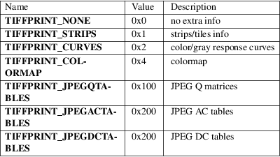

TIFFPrintDirectory − print a description of a TIFF directory
#include <tiffio.h>
void TIFFPrintDirectory(TIFF *tif, FILE *fd, long flags)
TIFFPrintDirectory() prints a description of the current directory in the specified TIFF file to the standard I/O output stream fd. The flags parameter is used to control the âlevel of detailâ of the printed information; it is a bitwise−or of the flags defined in tiffio.h:

In C++ the flags parameter defaults to 0.
None.
None.
libtiff (3tiff), TIFFOpen (3tiff), TIFFReadDirectory (3tiff), TIFFSetDirectory (3tiff)
LibTIFF contributors
1988-2022, LibTIFF contributors